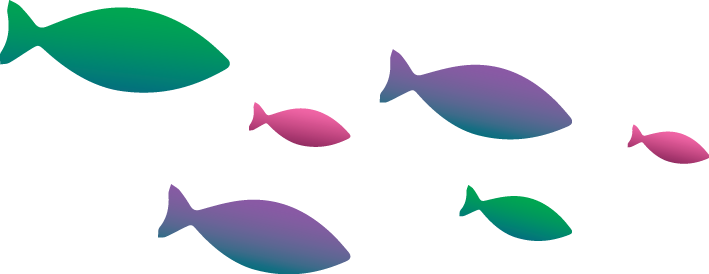
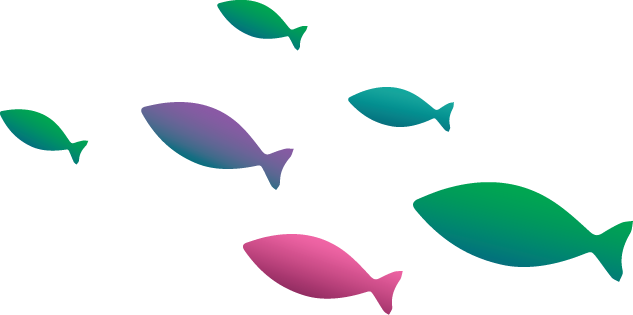

We at Frescamer believe that each and every one of you deserve the very best when it comes to flavour, freshness and quality. World class facilities process and preserve the seafood so as to ensure that each and every one of our
products are export quality, which is the best quality of food you would find in the market. Strict quality control measures are followed including HACCP regulations while processing, as well as quick freezing for the seafood
to retain freshness. With our fully cleaned out and cut pieces, all you need to do is throw them onto the frying pan, sprinkle some herbs and simply relish the assorted and wondrous flavours of the ocean.
From ready to prepare curry cuts, delicious and juicy fish steaks, to crunchy squid rings, if you consider yourself a connoisseur of fine dishes, especially of seafood, then rest assured, Frescamer is your next favorite
chef.
-Team Frescamer

Sustainable and eco-friendly practices to minimise the impact on environment thus saving for the future generations.
Strict lab tests and quick freezing for each and every product ensures the highest quality possible.
Adherence to HACCP principles ensure quality and freshness.
